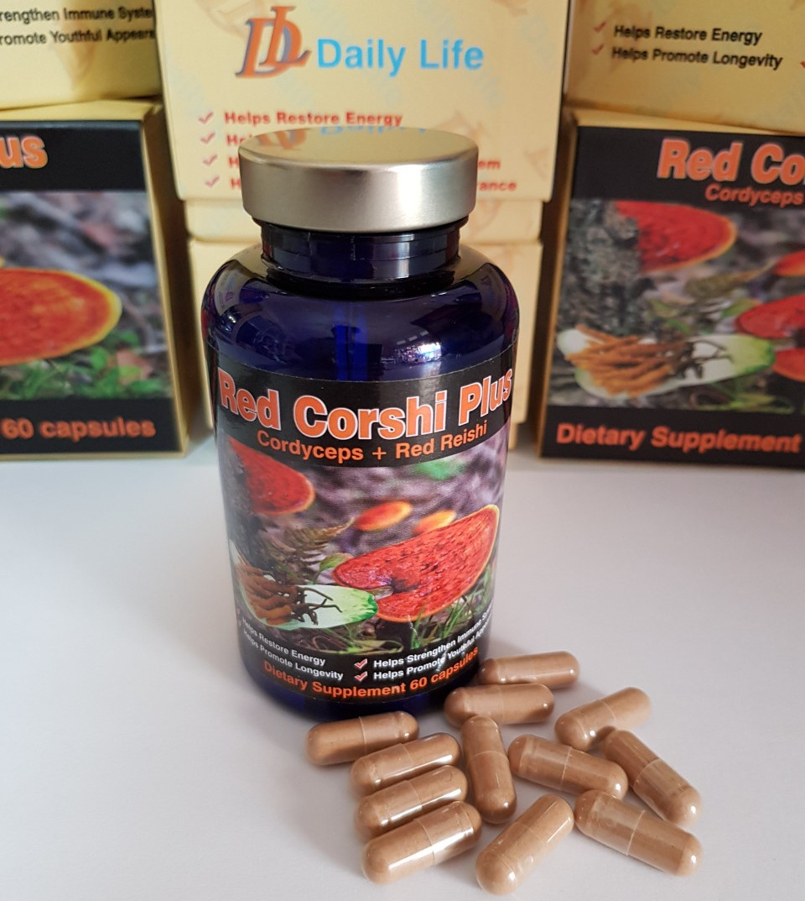

Red Corshi Plus 1
Cordyceps and reishi are types of fungi historically used as natural medicines in China, Japan, Korea and USA
Cordyceps is the name of a genus containing over 400 species of parasitic fungi, whereas reishi (Ganoderma lucidum) is a species of mushroom that commonly grows on rotting tree stumps. Both fungi have been used for thousands of years as versatile herbal remedies and share some of the same therapeutic profile. For instance, both cordyceps mushrooms and reishi were used to combat fatigue, support the respiratory system and liver and to promote longevity.
Today, cordyceps and reishi extracts are often sold as a combined supplement and touted as a potent support for one’s immune system, particularly during times of increased stress. lthough these natural substances are now popular supplements around the world, including in North America, further clinical studies are required to provide scientific evidence of their therapeutic effects.
What is Cordyceps?
Cordyceps is a botanical genus of fungi. Of the 400 or so species which make up the genus, C. militaris is one of the best known. Sinensis and C. unilateralis were historically the most popular, but were recently discovered to be genetically dissimilar to other species of Cordyceps. They have since been reclassified into the Ophiocordyceps genus.
Cordyceps is used as a general term to refer to many species and C. sinensis is still often sold as a cordyceps supplement.
Currently, C. militaris remains the focus of cordyceps research. Preliminary research based on animal models and laboratory experiments indicate C. militaris exhibits some antitumor, antioxidant, antidiabetic and immunomodulatory effects.
It has also been observed to support elements of the cardiovascular system. These studies have not included experiments on a human population and it is not clear if the observed benefits will take place within the complex human system.
Cordyceps militaris is being investigated for its ability to:
- Inhibit proliferation of some tumor cells;
- Improve cardiovascular health by reducing triglycerides and LDL cholesterol;
- Improve glucose use and increase insulin sensitivity;
- Enhance liver function;
- Improve renal function and protect the kidneys from damage;
- Regulate and support the immune system;
- Increase libido and energy;
- Improve athletic performance and stamina
What is Reishi?
Like cordycep, reishi mushrooms (also commonly called lingzhi mushrooms) have been used since ancient times in many Asian countries. In traditional Chinese medicine, reishi is used to combat fatigue, treat asthma and cough, promote longevity and support the liver.
Within the Western medical context, reishi is known to exhibit strong antioxidant properties and possess high levels of polysaccharides; however, there is little scientific evidence to support its many common uses.
Reishi is used to:
- Support and strengthen the immune system;
- Act as an adaptogen to help cope with daily stress;
- Combat viruses;
- Decrease LDL cholesterol levels and triglycerides;
- Treat symptoms of various respiratory conditions, including chronic bronchitis and asthma;
- Support kidney and liver health;
Taking Cordyceps and Reishi Together
- A number of supplements include a specific combination of fungi selected to illicit a therapeutic effect.
- Cordyceps and reishi are often sold together to strengthen the immune system, especially during periods of abnormal stress.
- Both fungi are generally well tolerated by humans (see side effects section for further details) and there is no evidence to indicate interactions when the two supplements are taken together.
- However, it is important to speak with your healthcare provider before you begin any new supplement program.
- Common dosages for cordyceps extracts range between 3 and 6 grams daily for healthy humans. For reishi, the amount administered daily may range from 3 to 9 grams. Normally, these total daily amounts are divided into three equal doses and taken before meal times.
- As with all types of supplements, the effects of cordyceps and reishi mushrooms are thought to be more beneficial when used in conjunction with healthy and holistic lifestyle habits, including daily physical activity, proper hydration, adequate rest and effective stress management.
Safety and Side Effects
- Cordyceps and reishi mushrooms are both generally well tolerated; however, mild side effects have been reported. Side effects of Cordyceps militaris may include mild stomach upset, diarrhea and dry mouth. These side effects are often mild and usually quickly abate.
- Individuals taking other medications should exercise caution: Cordyceps may interact with certain antihypertensive, antidiabetic, anticoagulant and immunosuppressive medications. Supplementation should always be discussed with your doctor, especially if you are taking any prescription medications.
- Possible reishi side effects include dry mouth and/or throat, upset stomach, rash, itching skin and/or headaches. These effects usually subside in one to two days.
- Like cordyceps, reishi mushrooms may interact with antidiabetic, antihypertensive and/or immunosuppressant drugs.
- Please talk with your doctor and exercise caution if you intend to supplement with cordyceps and/or reishi.